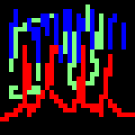

Nanowave Pulse Generator

Description
Due to the unavailability of temporal anomalies, psyphonic mutation has been attempted
in some individuals to allow energizing via nanowave pulse generators. The process of
using a nanowave pulse is involved and complicated, hence the existence of this recipe.
Ingredients
- 2 Gigawatt Energy Conduits
- 3 Nanowave Pulse Beams
- 7 Sidefumbling Prevention Arms
- 1 Micro Encabulator (Can be replaced with older Turbo Encabulator in a pinch)
Steps
- Use the first energy conduit to power up the micro encabulator.
- Utilize the 7 sidefumbling prevention arms in sockets 7, 9, and 13.
- Connect nanowave pulse beams.
- Connect nanowave pulse beams to the second gigawatt energy conduit.